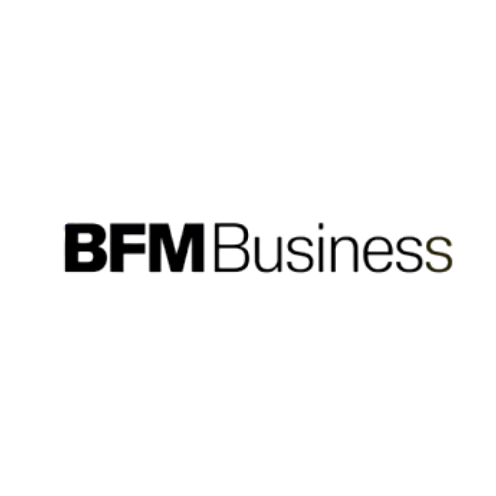
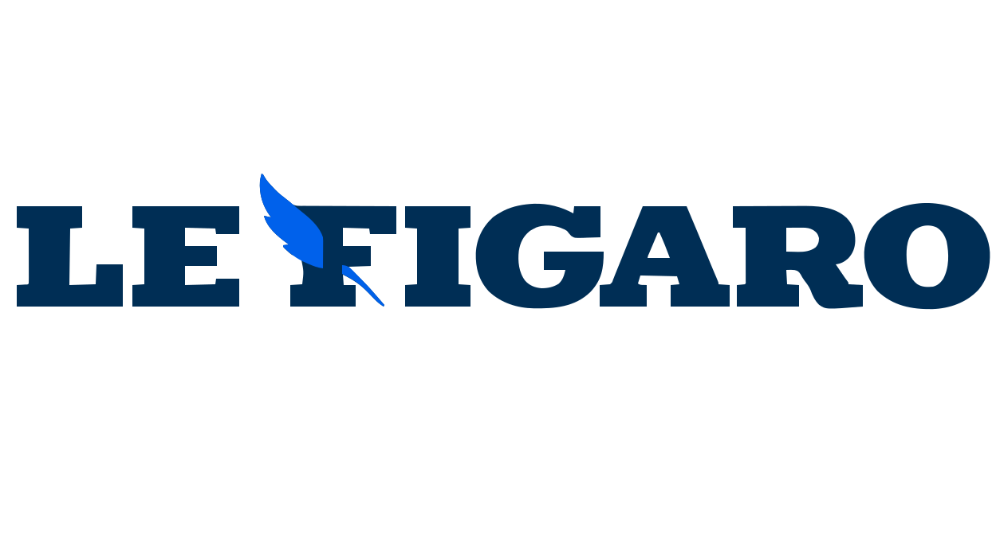

Avocats, consultants, économistes, experts sectoriels, spécialistes de la finance d’entreprise : certaines paroles ont moins vocation à se montrer qu’à rendre une transformation compréhensible.
Ici, la question n’est pas seulement de prendre la parole, mais de savoir ce qu’une lecture, une méthode ou une analyse permet réellement d’éclairer.
Les formats s’inscrivent dans des environnements éditoriaux reconnus.


Cette page s’adresse aux avocats, consultants, économistes, experts sectoriels, spécialistes des opérations et certains acteurs de la finance dont la parole aide à comprendre une évolution économique, réglementaire, financière ou stratégique.
Le point commun n’est pas le métier lui-même, mais la capacité à apporter une lecture utile sur un sujet plus large : réglementation, gouvernance, financement, restructuration, marchés, dette, capital, transformation sectorielle ou nouvelles pratiques.
Les Éclaireurs n’est pas une série de personal branding. C’est un cadre éditorial pour les paroles expertes qui rendent un sujet plus intelligible.
Un Éclaireur n’est pas défini par sa notoriété, mais par ce qu’il aide à comprendre : un changement réglementaire, un mécanisme de financement, une recomposition de marché, une innovation de méthode, une lecture sectorielle.
Le propos ne porte pas d’abord sur la personne, mais sur le sujet qu’elle rend plus clair.
Voir les séries en coursLa série n’est pas conçue pour des logiques d’exposition générique. Elle vise à situer une expertise dans un enjeu économique ou réglementaire compréhensible pour un public plus large.
C’est ce qui distingue un Éclaireur d’un simple commentaire d’actualité ou d’un discours commercial.
Vérifier la pertinenceCertaines expertises relèvent naturellement des Éclaireurs. D’autres peuvent, selon le sujet, s’inscrire dans une conversation collective ou dans un traitement plus approfondi.
Une édition consacrée aux experts dont la parole permet d’éclairer des mutations réglementaires, financières, capitalistiques ou sectorielles.
Une émission est ouverte pour cette édition.
Vérifier la pertinenceCertaines expertises peuvent aussi trouver leur place dans une conversation collective lorsqu’elles éclairent un mouvement plus large que leur seule pratique.
Voir les autres sériesCertaines trajectoires d’experts ou de cabinets demandent un traitement plus approfondi lorsqu’il s’agit moins d’un sujet que d’un cap, d’une doctrine d’intervention ou d’un positionnement de marché.
Voir les autres sériesUn avocat, un consultant, un économiste ou un spécialiste du financement ne prennent pas la parole pour les mêmes raisons. Mais la question de fond reste la même : qu’est-ce que cette expertise permet réellement de comprendre ?
Expliquer ce qu’un changement de norme, de doctrine ou d’interprétation produit réellement sur les organisations, les opérations ou les secteurs.
Faire apparaître un mécanisme, une méthode ou une lecture de marché qui reste souvent trop abstraite ou trop jargonisée.
Éclairer un sujet par des tendances, des arbitrages, des effets de structure et une lecture plus rigoureuse du réel.
Dette, capital, M&A, restructuring, financement de croissance : rendre un sujet financier intelligible sans basculer dans la logique commerciale.
Une émission utile n’est pas d’abord un support de notoriété. C’est un cadre qui permet de situer une expertise, d’en montrer l’utilité et de la relier à un sujet concret.
Lorsqu’elle est bien pensée, elle peut faire apparaître une lecture, crédibiliser un positionnement, ouvrir un débat utile ou stabiliser une parole plus claire dans un environnement concurrentiel.
Avec un objectif constant : rendre une expertise plus intelligible, plus crédible et plus défendable.
Faire comprendre à quelles conditions une évolution réglementaire modifie concrètement les pratiques d’un secteur.
Sortir du commentaire ponctuel pour éclairer une recomposition de marché, une concentration, une mutation sectorielle.
Expliquer dette, capital, financement de croissance, restructuration ou arbitrage d’opération dans une langue compréhensible.
Faire apparaître une façon de lire, de traiter ou de résoudre un sujet complexe sans tomber dans la démonstration publicitaire.
Une émission utile ne commence pas seulement par un expert. Elle commence par un problème, un changement, une tension ou un mécanisme plus large.
C’est ce déplacement qui permet d’éviter l’autopromotion et de tenir une parole plus claire, plus utile et plus crédible.
Les Éclaireurs constitue le cadre naturel de cette page. Mais selon le sujet, certaines expertises peuvent parfois relever d’une conversation collective ou d’un traitement plus approfondi.
Si le sujet permet de comprendre une transformation de filière, de marché, d’industrie ou de territoire, un cadre collectif peut devenir plus pertinent.
Voir le cadreSi le sujet réside moins dans l’expertise elle-même que dans une trajectoire, un positionnement ou une logique d’action, un traitement plus approfondi peut s’imposer.
Voir le cadreLe travail s’adapte à la réalité d’un cabinet, d’un expert indépendant, d’une boutique spécialisée ou d’une équipe resserrée. L’objectif reste simple : clarifier la parole, éviter l’improvisation et tenir une ligne lisible.
L’objectif n’est pas le thought leadership générique. Au contraire : parler utile, précis, compréhensible. Une émission réussie aide un expert à mieux prendre place dans une conversation économique, sans surjeu ni simplification abusive.
Cette approche n’est pas adaptée aux discours purement promotionnels ni à la vente de produits.
Un échange confidentiel permet d’analyser votre situation, d’évaluer le niveau d’exposition approprié et de déterminer si votre sujet relève des Éclaireurs, d’une conversation collective ou d’un traitement plus approfondi.
Lorsque nécessaire, un accord de confidentialité peut être formalisé en amont de toute analyse approfondie.